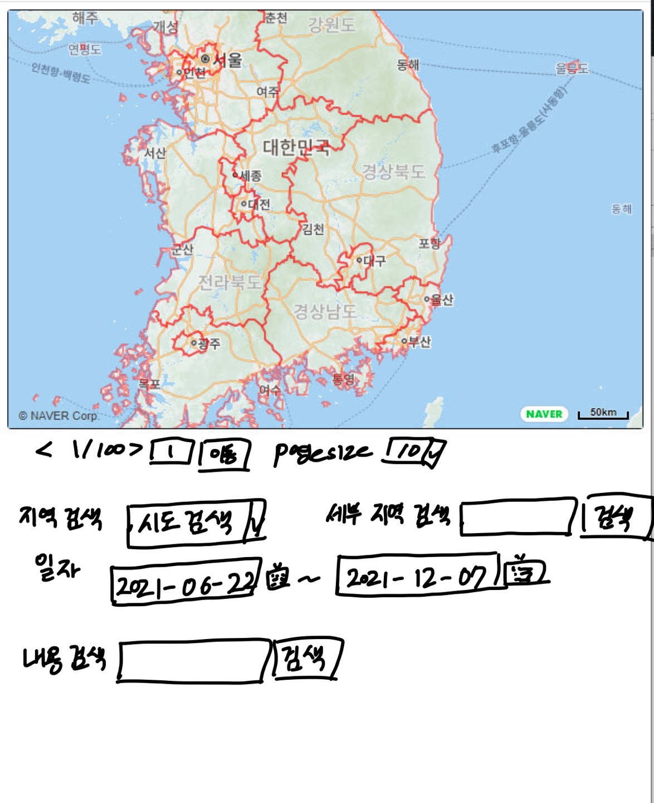

입력/출력
- 입력: 이동하고 싶은 페이지를 기입하거나 다음, 이전페이지 이동 버튼을 클릭한다.
출력: 페이지를 이동한다.
- 입력: 검색하고 싶은 지역 클릭한다.(행정구역만 가능)
출력: 클릭된 지역의 재난문자만 보여준다.
- 입력: 검색하고 싶은 지역을 기입한다.(시군구 가능)
출력: 검색된 지역의 재난문자를 보여준다.
- 입력: 달력을 이용하여 일자 범위를 표시한다.
출력: 해당 날짜 범위의 재난문자만 출력한다.
- 입력: 내용 검색
출력: 검색한 내용을 포함하는 재난문자만 출력한다.